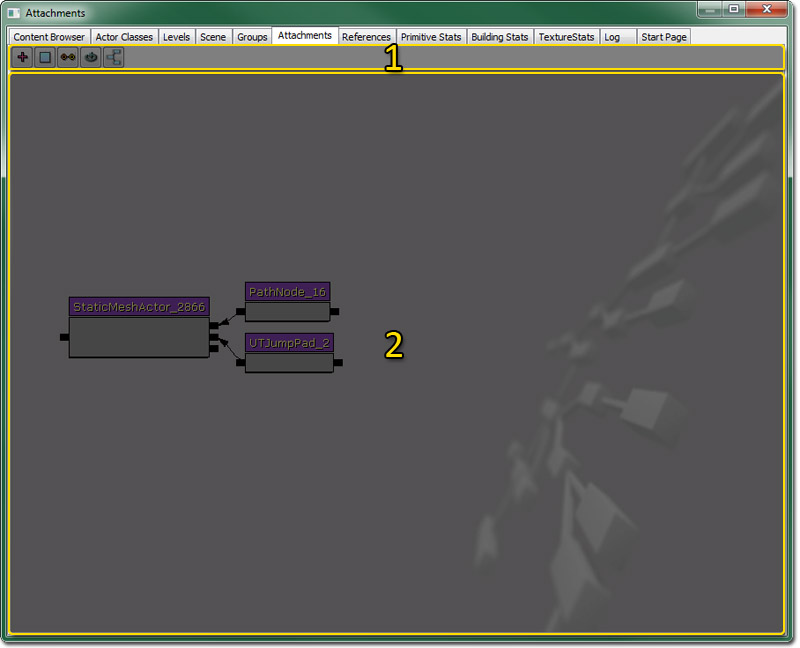
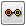
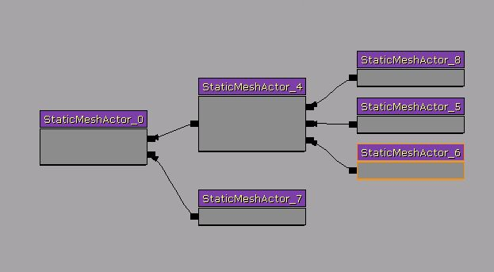

UDN
Search public documentation:
AttachmentsBrowserReferenceCH
English Translation
日本語訳
한국어
Interested in the Unreal Engine?
Visit the Unreal Technology site.
Looking for jobs and company info?
Check out the Epic games site.
Questions about support via UDN?
Contact the UDN Staff
日本語訳
한국어
Interested in the Unreal Engine?
Visit the Unreal Technology site.
Looking for jobs and company info?
Check out the Epic games site.
Questions about support via UDN?
Contact the UDN Staff
附加物浏览器参考指南
概述
打开附加物浏览器
附加物浏览器界面

- 工具条
- 工作区
工具条
 | 把视口中选中的actors及它们的附加物添加到工作区中。 |
 | 从工作区中清除所有actors。 |
|  | 把工作区中所有选中的actors附加到上一个选中的actor上。 |
 | 刷新工作区并更新在附加物浏览器之外产生的所有附件。 |
 | 在工作区中自动排列actors和附加物，以便基础actor在左边，所有的附加物都放在该actors的右边。 |
添加Actors
附加Actors

另外，选择您想设置为新的Base(基础)的Actor。 按下Alt-B，或者点击工具条上的'Attach Actors(附加Actors)'按钮。
按下Alt-B，或者点击工具条上的'Attach Actors(附加Actors)'按钮。